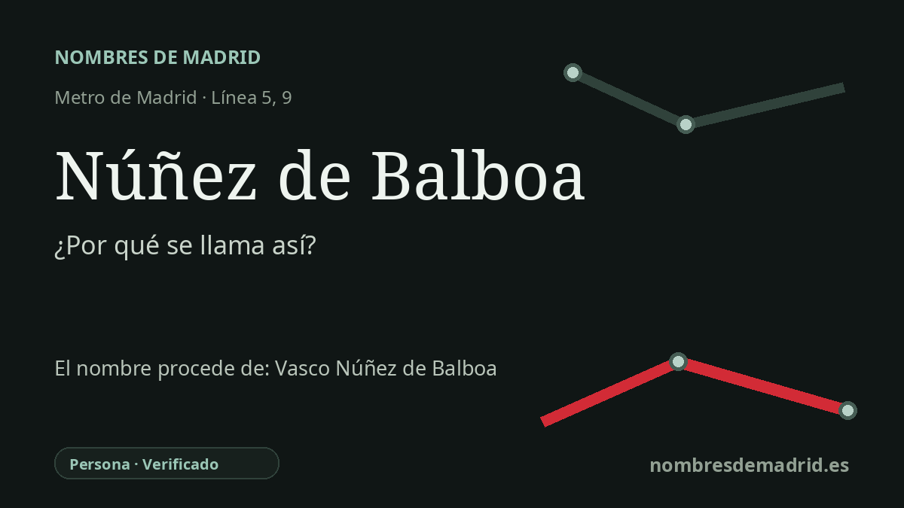

Publicado el · Investigación de Nombres de Madrid · Cómo verificamos cada origen · 8 fuentes consultadas
Respuesta rápida
La estación de Núñez de Balboa toma su nombre de la calle madrileña que recuerda a Vasco Núñez de Balboa, el explorador y conquistador extremeño asociado al descubrimiento europeo y denominación de la Mar del Sur, hoy océano Pacífico, en 1513.
La historia del nombre
La estación de Núñez de Balboa recibe su nombre de la calle de Núñez de Balboa, vía a la que da uno de sus accesos y que el Consorcio Regional de Transportes identifica en el número 85. El nombre de la calle conmemora a Vasco Núñez de Balboa, de modo que el topónimo de la estación es un nombre personal transmitido a través del callejero, no una denominación elegida directamente para el explorador sin mediación urbana.
Vasco Núñez de Balboa fue un explorador y conquistador extremeño, nacido en Jerez de los Caballeros hacia 1475. El propio Ayuntamiento de Madrid lo presenta en su material conmemorativo como el marino y explorador recordado por el descubrimiento europeo del Pacífico desde su costa oriental, y documenta que en 2013 se colocó una placa en su honor en la calle Núñez de Balboa número 2, dentro de los actos del quinto centenario.
El episodio central de su fama ocurrió en septiembre de 1513. Balboa cruzó el istmo de Panamá desde la vertiente caribeña y llegó a las aguas que los españoles llamaron entonces Mar del Sur. La tradición posterior ha destacado la toma solemne de posesión entrando en el agua, aunque el dato histórico esencial es que aquella travesía de 1513 abrió para Europa una nueva comprensión geográfica del océano situado más allá del continente americano.
La calle madrileña forma parte de la trama del distrito de Salamanca y discurre desde la calle de Alcalá hacia el norte, con numeración registrada oficialmente tanto en Salamanca como en Chamartín. La estación de Metro abrió en la línea 5 con la prolongación Callao-Ventas de 1970. En 1986, el tramo de la línea 9 entre Avenida de América y Sainz de Baranda añadió nuevos andenes y un transbordo largo, con pasillos rodantes, en Núñez de Balboa.
El origen del nombre de la estación está, por tanto, bien documentado: los datos actuales del CRTM sitúan un acceso en la calle de Núñez de Balboa, el Callejero Oficial del Ayuntamiento confirma la vía y la documentación municipal conmemorativa vincula explícitamente esa calle con Vasco Núñez de Balboa. La cautela es biográfica, no toponímica: las fuentes disponibles no permiten afirmar como hecho cerrado que los cargos contra Balboa fueran simplemente falsos.